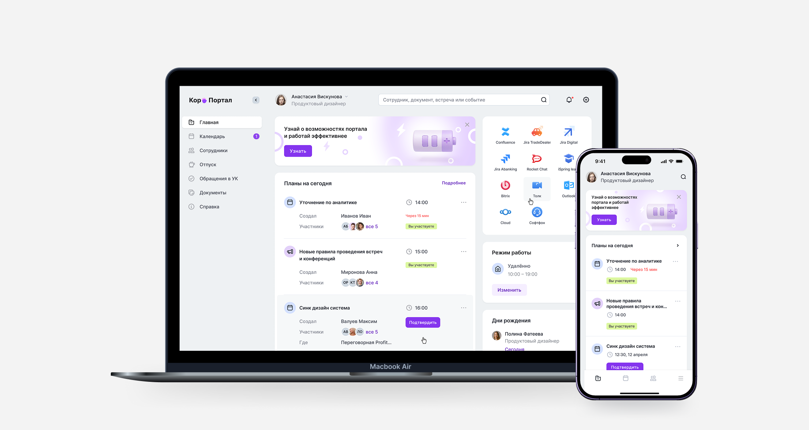
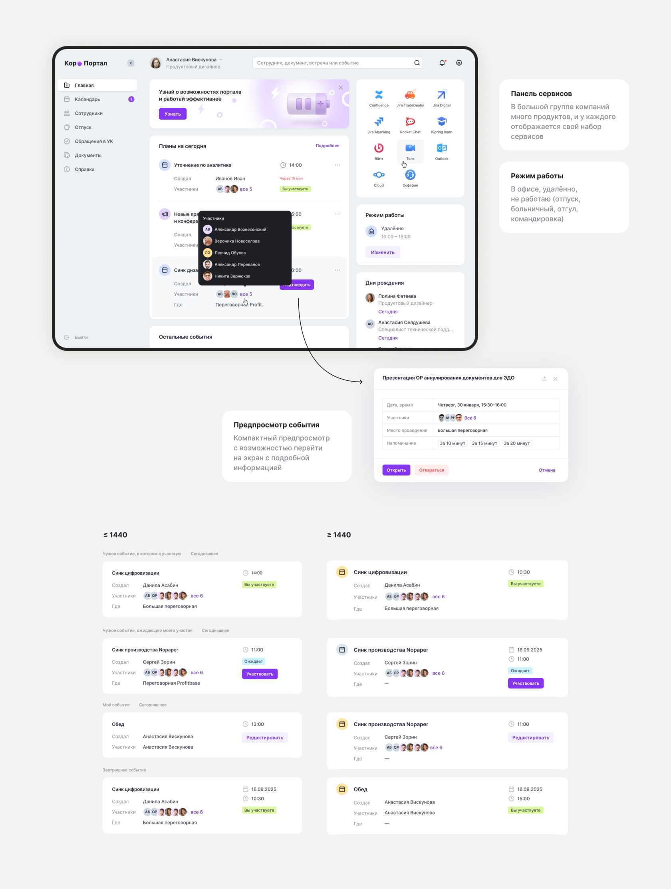
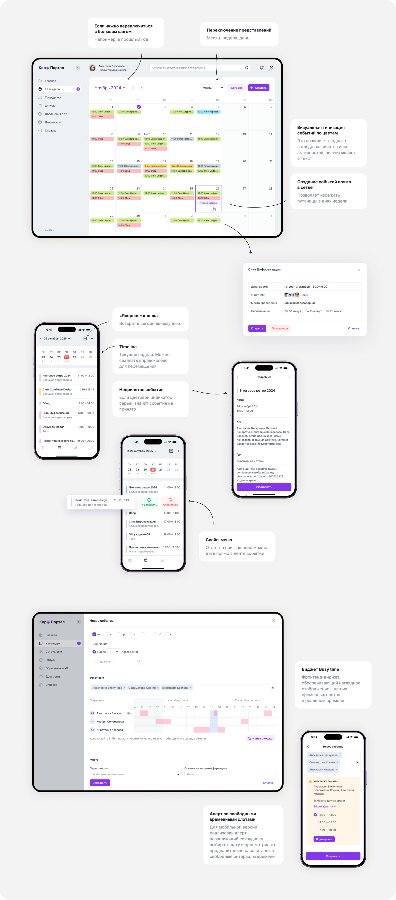
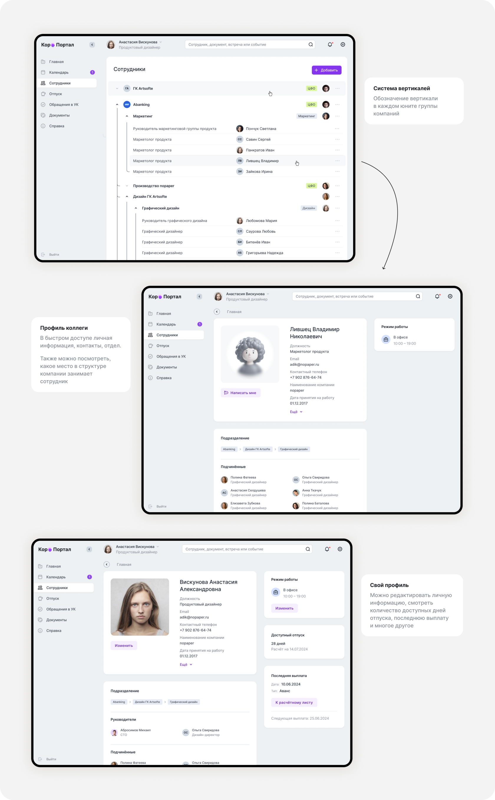
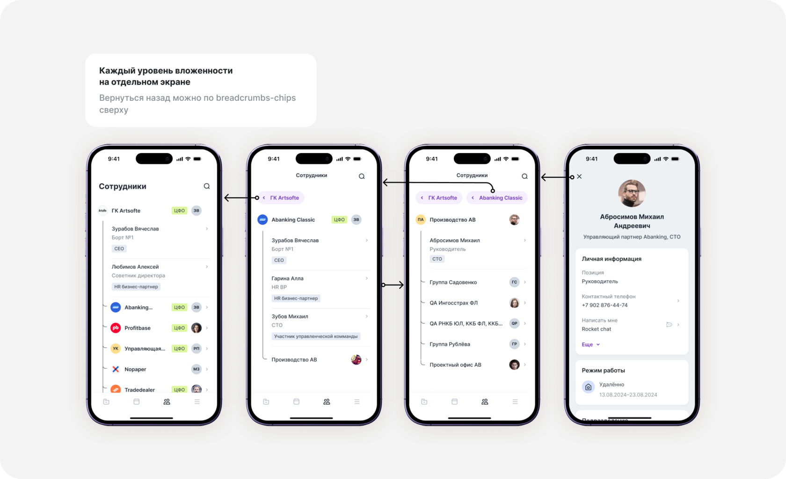
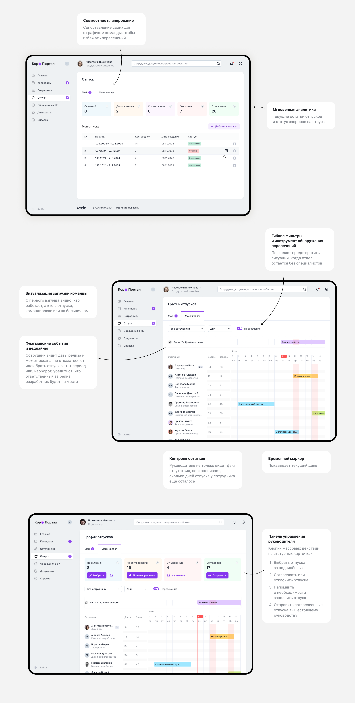
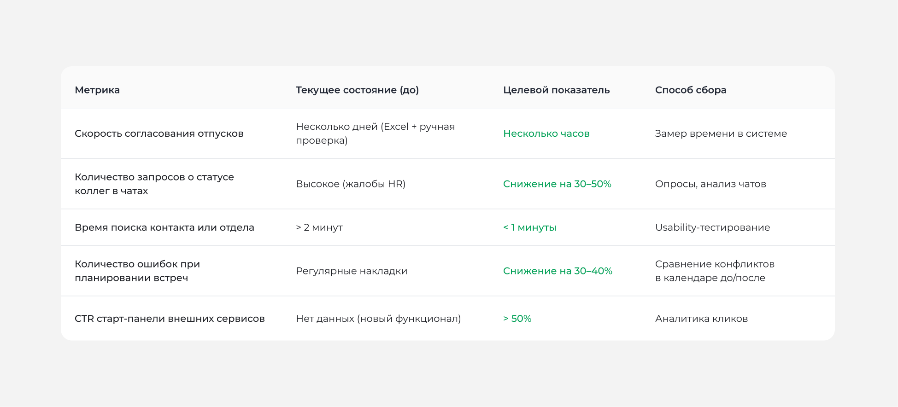

Корпоративный портал
Разработала MVP корпоративного портала на low-code платформе, который заменил громоздкий Bitrix24 и решил проблемы неактуальных данных, функциональной избыточности и несоответствия бизнес-процессам. Проект включает desktop-версию и отдельное мобильное приложение.
-
−20–30%
переходов между разделами благодаря виджету планов на главной
-
дни → часы
на согласование отпусков
-
−40–50%
времени на поиск контакта
Целевой эффект: продукт ещё не запущен, цифры будут сверены с реальными данными после релиза.

Контекст и проблема
На июнь 2025 года ключевые рабочие процессы группы компаний Artsofte автоматизированы в Bitrix24. Компания имеет распределённую структуру: два офиса в одном городе, часть сотрудников на удалёнке из других регионов и часовых поясов.
В конце 2024 года руководство инициировало проект по созданию нового корпоративного портала. Причина — Bitrix24 перестал отвечать потребностям бизнеса.
Критические проблемы, выявленные в интервью с IT-директором и HR BP:
- Неактуальность данных. Оргструктура в Bitrix не синхронизирована с реальными изменениями; актуальная информация хранится в Excel, чатах и других разрозненных источниках
- Сложность поддержки. Администрирование требует много ручного труда и времени
- Функциональная избыточность. Множество инструментов Bitrix не используются, но усложняют интерфейс и создают когнитивную нагрузку
- Несоответствие оргреалиям. Логика системы не отражает внутренние бизнес-процессы и структуру группы компаний
- Ручное управление отпусками. Данные об отсутствиях собирались в Excel; руководители вручную отслеживали пересечения и устраняли конфликты
Анализ конкурентов
Битрикс24
- Интранет «всё в одном», 6200+ интеграций
- Перегружен, медленный, дорогой в поддержке и кастомизации
МояКоманда / Пряники
- Лёгкие, быстрый запуск, мобильное приложение
- Упор на коммуникации, нет глубокой интеграции с 1С
VK Teams
- Единая точка входа (чаты, звонки, таски)
- Требует замены уже используемых сервисов
ТопФактор / Directum HR Pro
- Гант, согласование отпусков, контроль LDM
- Только HR-модуль, нет «зеркала дня»
UnSpot / Hotdesk
- Бронирование переговорок с интеграцией с календарями
- Не видят занятость коллег и часовые пояса
Пробел рынка, который мы закрываем:
Никто не предлагает лёгкий портал-«зеркало дня», где:
- достоверные данные из 1С в реальном времени
- отпуска в Ганте с согласованием
- бронь переговорок и календарь с учётом таймзон
- старт-панель для уже используемых сервисов (Толк, Jira, Confluence)
Всё собрано в одном чистом интерфейсе без функционального мусора.
Цель продукта
Создать лёгкий корпоративный портал для группы компаний с распределённой структурой, который:
- заменяет дорогой и перегруженный Bitrix24
- синхронизирует все кадровые данные с 1С в реальном времени через API (оргструктура, сотрудники, режимы работы, отпуска)
- даёт «зеркало дня»: планы на день, режим работы, старт-панель внешних сервисов
- включает календарь с учётом бронирования переговорок, оргструктуру, график отпусков на диаграмме Ганта, документооборот и запросы в УК
Ограничения
Технологические:
- Основной инструмент — low-code платформа. Весь интерфейс собирался из готовых контроллов конструктора
- Функционал, которого не было в конструкторе, реализовывали кастомными виджетами силами фронта
- И контроллы, и виджеты собирались на компонентах Abanking Design System (токены: цвета, типографика, отступы, состояния)
Командные:
- Я — единственный дизайнер в команде
- Проект запускался в формате MVP — без возможности долгого исследования, с фокусом на скорость
Гипотезы
Главный экран
Гипотеза 1
Если на главной странице отображать планы на день в виде виджета, сотрудники будут реже отвлекаться на поиск информации
Предполагаем снижение количества переходов между разделами на 20–30%.
Гипотеза 2
Если на главной странице вывести виджет с режимом работы, сотрудники будут начинать день с этой опции, а команда будет знать статус коллег
Предполагаем снижение количества запросов в чатах о статусе коллег на 80%

Календарь
Гипотеза 1
Если в календаре отображать занятость каждого участника и показывать свободные окна для встреч, то сотрудники смогут быстрее согласовывать время без лишних переписок и накладок в расписании.
Снижение времени на согласование встреч на 30–40%
Гипотеза 2
Если в календаре предусмотреть занятость переговорок, это позволит снизить количество обсуждений в чатах на 65%.

Сотрудники (оргструктура)
Если данные о сотрудниках и структуре синхронизируются с 1С и доступны в мобильной версии, сотрудники будут быстрее находить нужных коллег
Сокращение времени поиска контакта на 40–50%


Отпуска
Если руководитель может согласовывать отпуска через диаграмму Ганта и списки (поштучно и массово), то время на управление отсутствиями сократится, а конфликты в графиках будут исключены.
Сокращение времени согласования с нескольких дней до нескольких часов


Продукт ещё не запущен — метрики, заложенные для каждой гипотезы, будут сверены с реальными данными после релиза. Рефлексия ниже — про процесс и решения, а не про итоговые цифры, которых пока не существует.
Рефлексия и выводы
Этот проект научил меня одному из самых важных уроков в дизайне: ты — не пользователь
В начале проекта я предполагала, что главная боль сотрудников — неудобный интерфейс. Однако интервью с ключевыми стейкхолдерами (IT-директор, HR BP) показали другую картину: для бизнеса критичны не визуальные детали, а достоверность данных и скорость согласования.
Пример: Мы могли бы сделать красивую ленту новостей на главном экране. Но руководители сказали: «Мне не нужны новости, мне нужен Гант отпусков, чтобы видеть, кто выходит, а кто нет». Это заставило меня пересмотреть приоритеты — на главный экран попали виджеты с планами, режимом работы и старт-панелью, а не общая лента.
Удачные решения:
- Кастомная диаграмма Ганта для отпусков — наглядный пример того, как фронтенд доработка может быть точно подогнана под внутренние бизнес-процессы.
- Синхронизация с 1С в реальном времени — убрала ручное ведение данных и сделала оргструктуру всегда актуальной.
Что можно было сделать лучше:
- Провести больше пользовательских интервью с рядовыми сотрудниками на раннем этапе (не только со стейкхолдерами).
- Заложить больше времени на исследование мобильного сценария — он оказался сложнее, чем предполагалось.